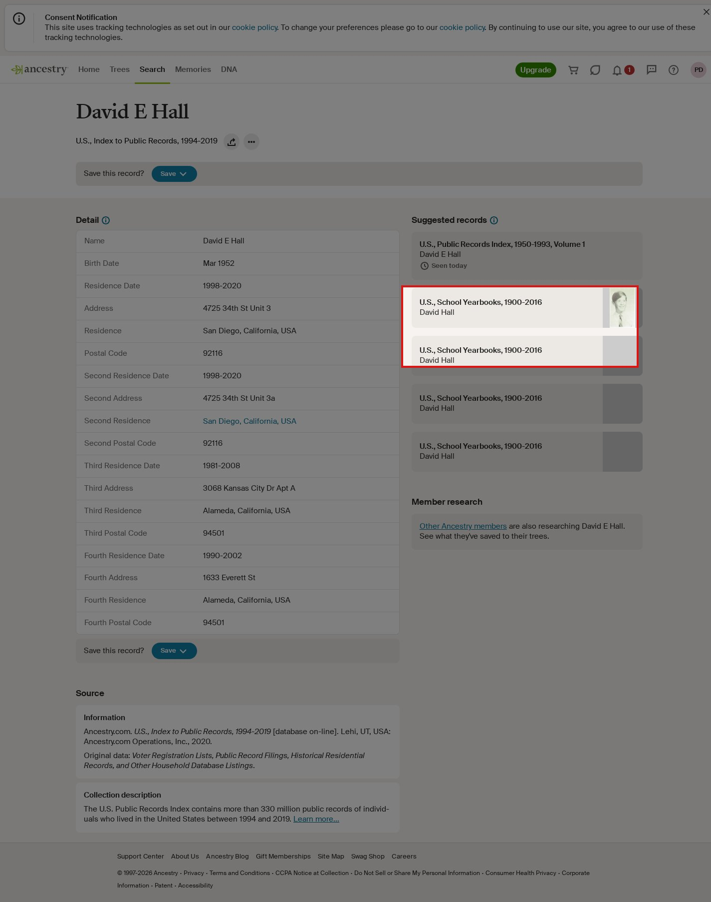

David Hall b. 1952
Peter's uncle.
Living. As for every living relative on this site, the birth date is given by year only, and no current address is shown.
David Hall was born in 19521, the son of Charles Henry Hall and Estella May Alderson4,5. He married Cindy Berry on 27 Aug 1977 in San Diego, California, United States6,7,8.
Family
- Parents
- Charles Henry Hall 1920–2001 and Estella May Alderson 1916–2008 documented
- Wife
- Cindy Berry · married on 27 Aug 1977 in San Diego, California, United States6,7,8
- Children
- Amber Hall b. 1979 documented
Life events
| Event | Date | Place and details |
|---|---|---|
| Born | 1952 | 1 |
| Married | 27 Aug 1977 | with Cindy Berry San Diego, California, United States6,7,8 |
| Lived | bet 1993 and 1994 | San Diego, California, United States2,3 |
Records



Sources
- David E Hall, born 1952, Alameda, CA, Collection 1788, Record 103205284.
Name: David E Hall; Birth Date: 1952; Residence Date: 1996; Address: [address omitted]; Residence: Alameda, CA; Postal Code: 94501-1550
Birth Date: 1952 (twin of Dale Edward Hall I0130, also born 1952 in 1788:120412943; born outside California, as neither twin appears in the California Birth Index). Residence Date: 1996; Address: [address omitted], Alameda, CA 94501-1550.
- David E Hall, born 1952, San Diego & Alameda, CA, Collection 1788, Record 250988626.
Name: David E Hall [David Hall]; Birth Date: 1952 [1952]; Address: [address omitted]; Residence: San Diego, CA; Postal Code: 92116-1664; Second Residence Date: 1994; Second Address: [address omitted]; Second Residence: Alameda, CA; Second Postal Code: 94501-8024; Third Address: [address omitted]; Third Residence: San Diego, CA; Third Postal Code: 92116-1813; Fourth Residence Date: 1993; Fourth Address: [address omitted]; Fourth Residence: Alameda, CA; Fourth Postal Code: 94501-1550
Birth Date: 1952. Addresses: [address omitted]; [address omitted] (1994); [address omitted] (shared with daughter Amber J. Hall de la Motte in 62209:318288116 and son-in-law Marc A. Delamotte in 62209:283381586); [address omitted] (1993).
- David E Hall, San Diego & Alameda, CA, Collection 62209, Record 318364859.
Name: David E Hall; Birth Date: 1952; Residence Date: 1998-2020; Address: [address omitted]; Residence: San Diego, California, USA; Postal Code: 92116; Second Residence Date: 1998-2020; Second Address: [address omitted]; Second Residence: San Diego, California, USA; Second Postal Code: 92116; Third Residence Date: 1981-2008; Third Address: [address omitted]; Third Residence: Alameda, California, USA; Third Postal Code: 94501; Fourth Residence Date: 1990-2002; Fourth Address: [address omitted]; Fourth Residence: Alameda, California, USA; Fourth Postal Code: 94501
Birth Date: 1952. Residences: [address omitted], San Diego, CA 92116 (1998–2020; same ZIP code 92116 where his mother Stella May Hall died in June 2008 per SSDI); [address omitted], Alameda, CA 94501 (1981–2008); [address omitted], Alameda, CA 94501 (1990–2002).
- Peter's tree, danenberg.sql, 2007–2015, parentages 53.
- Obituary: Charles Henry Hall, 80, The Orange County Register (Santa Ana, California), 16 March 2001.
Charles Henry Hall, 80, of Newport Coast, a trucking maintenance manager, died March 9, 2001, of myasthenia gravis. Services have been held. Arrangements by Fairhaven Memorial Park & Mortuary, Santa Ana. Wife, Stella; daughters, Kathleen Danenberg, Susan Hall; sons, a DNA match, Dale, Charles, James; nine grandchildren.
father: Charles Henry Hall; mother: Estella May Alderson
- Peter's tree, danenberg.sql, 2007–2015, unions 51, inauguration.
- David E Hall & Cindy A Berry, 27 Aug 1977, San Diego, Collection 1144, Record 376316.
Name: David E Hall; Gender: Male; Birth Year: abt 1952 [abt 1952]; Age: 25; Marriage Date: 27 Aug 1977; Marriage Place: San Diego, California, USA; Spouse Name: Cindy A Berry; Spouse Age: 20
David E Hall (age 25, born abt 1952) married Cindy A Berry (age 20; I0136 in the 2015 database) on 27 August 1977 in San Diego, California.
- Marriage of Cindy A Berry and David E Hall, 27 Aug 1977, San Diego, California.
Name: Cindy A Berry | Gender: Female | Birth Year: abt 1957 [abt 1957] | Age: 20 | Marriage Date: 27 Aug 1977 | Marriage Place: San Diego, California, USA | Spouse Name: David E Hall | Spouse Age: 25
Married Cindy A. Berry (age 20) on 27 Aug 1977 in San Diego County, California